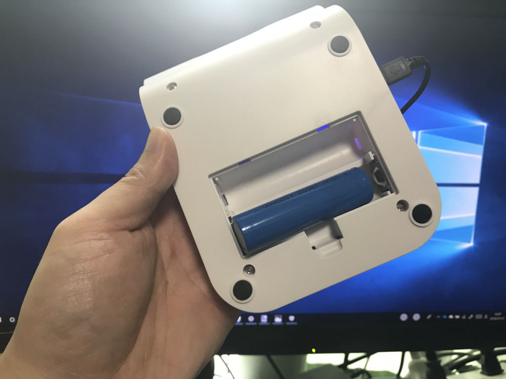

6月27日：Surface Book 2 の背面が熱かったので、扇風機をつけた
公開日：
最近、Surface Book 2 がもっさりしてるなぁ、と思っていたのだけど、ふと背面を触ってみると猛烈に熱い。「タスク マネージャー」を確認すると、CPU はずっと 1.7GHz あたりで動いている。排熱がうまくいっておらず、縮退運転になっていたようだ。エアコンつけっぱなしだから大丈夫だと思ってたんだけど、ちょっと甘かったかもしれない。
とりあえずその日は押し入れから扇風機を出してきて、背面に冷風を当てて乗り切ったのだけど、もう少しコンパクトな卓上扇風機がほしくなった。Amazon をのぞいてみると、ちょうどタイムセールをやっていたので適当なのを買ってみた。

こいつは USB 給電＆バッテリー駆動のハイブリッドタイプの卓上扇風機で、折り畳めんで携帯することも考えられている。キャンプで使うミニ扇風機としても割といいかなーと思った。風量は3段階（強2W 中1.2W 弱0.7W）で、メインボタンを押すと OFF → 弱 → 中 → 強 → OFF と切り替わる仕組み。シンプル……。音も「弱」であれば……そこそこ、我慢できる静かさ。
80度に傾けておけるのも、Surface Book 2 の背面に置いておくにはちょうど良かった。ちょっと底面積をとるのが難かなーと思ったけど、置き方の工夫でなんとかなるのか。頭が固いな……思いつかなかった。
ただ、ケーブルが欠品な気がした。まぁ、使ってない USB ケーブルが余ってるのでキニシナイ（

あと、初期状態ではバッテリーがちゃんとセットされてなかった。一見、バッテリーが2本セットできるように見えるけど、片方はリザーブで、そっちにバッテリーがはいっていた。なので、本体をゆするとカラカラと音が鳴る。スペースが無駄な感じはするけど……まぁ、なんにせよ、ぎっちぎちにするのがいいとは限らないからね。
バッテリーも普通の乾電池ではなく、18650リチウム電池（18mm×65mm）というモノらしい。文系だらかよく知らんのだが……量販店では手に入らないが、世界的にみると割とメジャーに使われているものらしい。コンビニで買ったモバイルバッテリーをバラしたら入ってそうなヤツ。同梱のバッテリーの品質がちょっと不安で、まだバッテリー機能は使ってないのだけど、Amazon でちゃんとしたメーカーのモノを取り寄せて入れてみるのはありかな？ 明るめの海外製懐中電灯は 18650 を採用しているものが多いみたいなので、それと共用できれば用途が広がりそう。
ちなみに、おかげで Surface Book 2 の背面は冷や冷やになった。扇風機を付けなくてもちゃんと 3GHz 以上で稼働していることもあるのだけど、せっかく30万円以上出して買ったんだし、長く使うためにも排熱はちゃんとしておこうと思った。